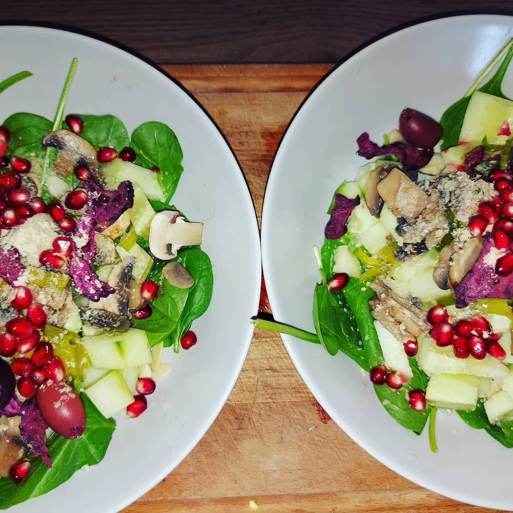

Olivy podľa @vyzivou.ku.zdraviu — Normy Jedál
🥗🥗🥗Tip na zdravy olovrant🥗🥗🥗
✔Baby spenat🥬
✔Restovane sampinony na ghee masle a poriku
✔Kalamata olivy🫒
✔Uhorka🥒
✔Susena cvikla
✔Granatove jablcko
✔Mandlove hoblinky
Dochutene citronom,solou a lahodkovym drozdim provita bez sladu 🍋
#lahodkovedrozdie #provita #vyzivoukuzdraviu #zdravedeti #olovrant #zeleninovýsalát #gheemasło #ghicko #ceskeghicko #susenacvikla #zdravéjedlo #zeleninajezaklad #zdravetuky #uhorka #citronovášťáva #solhimalajska #olivy #kalamataolivy #večera #zdravavecera #